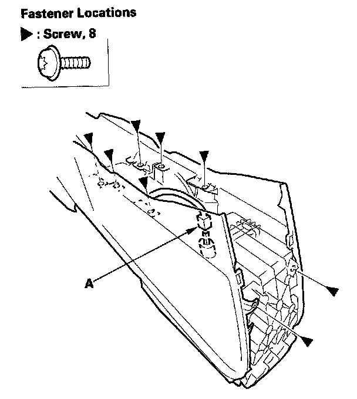
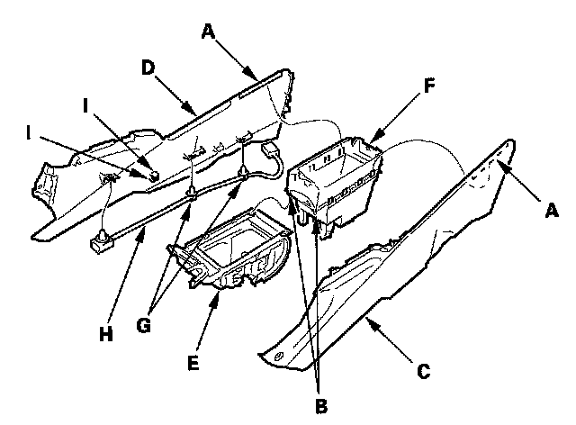
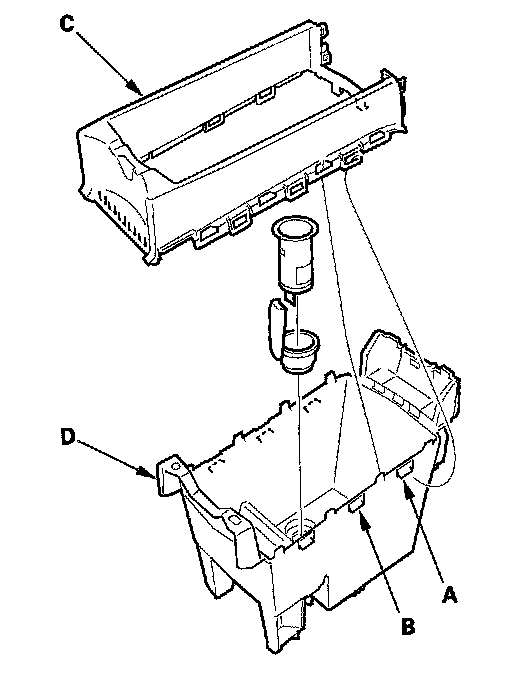

Overhaul
Center Console Disassembly/ReassemblySpecial Tools Required
KTC trim tool set SOJATP2014 *
* Available through the American Honda Tool and Equipment Program
NOTE:
- Use the appropriate tool from the KTC trim tool set to avoid damage when prying components.
- Take care not to scratch the center console, dashboard, and related parts.
1. Remove the center console.
2. If equipped, remove the center console armrest.

3. Using a T20 TORX bit, remove the screws, and disconnect the accessory socket connector (A).

4. Release the hooks (A) and pins (B), then separate the left console side panel (C), right console side panel (D), console beverage holder (E) and console box (F). If equipped, detach the harness clips (G), then remove the console subharness (H) from the hooks (I). 4-door is shown; 2-door is similar.

5. Release the hooks (A, B), then separate the console upper box (C) and console lower box (D).
6. Assemble the console in the reverse order of removal, and make sure the console subharness connector is plugged in properly.